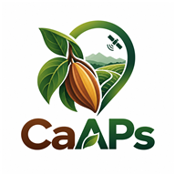

One platform. Always connected.
Install the web app for a dedicated home-screen experience. Receive published design and web-feature updates when you reopen the app online.

Install the CaAPs web app
No APK download is required. Your existing account works here.
Continue in browserHow updates work
Published website changes are fetched when you open a page online. If an update arrives during your session, a notice lets you reload after saving your work.
Keep the same website address for the installed app. A domain change may require installing from the new address.
Before going into the field
Open Sync & recovery, unlock your field data, and prepare the records and pages you need while connected. Uncached map tiles, uploads, reviews and staff account verification require connectivity.
If you already use the APK
The existing Android APK stores its own application files. It does not automatically become this web app. Install this web app once for website-delivered updates.
Synchronize pending APK records before switching. Browser and APK device-local drafts are stored separately.
Open the hosted installation page in your browser
Download the bundled Android APK insteadSupported devices
Android: install through a supporting browser such as Chrome. iPhone: open in Safari, then Share → Add to Home Screen. Installation availability depends on the browser.